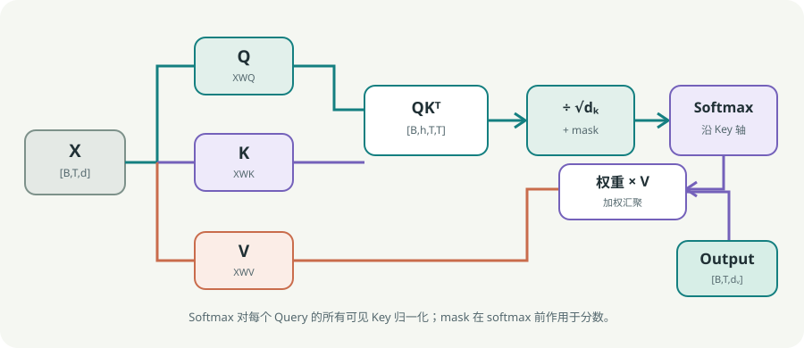

1. 为什么需要注意力
在循环网络中，序列按时间步逐个处理。当前位置要利用很早之前的信息，必须依赖隐藏状态在多次更新中传递。Transformer 改变了信息交换方式：在一个 self-attention 层里，每个 query 位置都可以直接与所有允许访问的 key 位置计算相关性，再从对应 value 中汇聚信息。
这并不意味着注意力天然“理解”了语言，也不意味着所有 token 都必须彼此可见。可见范围由 mask 决定：编码器通常允许位置间双向交互；自回归解码器会阻止当前位置读取未来 token。

2. 从 X 得到 Query、Key、Value
设一个 batch 的输入隐藏状态为 X ∈ R^B × T × d_model，其中 B 是 batch size，T 是序列长度，d_model 是隐藏维度。对单个注意力头，使用三个可学习线性投影：
若 W_Q,W_K ∈ R^d_model × d_k，而 W_V ∈ R^d_model × d_v，那么 Q,K 的最后一维为 d_k，V 的最后一维为 d_v。在常见多头配置中，d_k=d_v=d_model/h，h 是 head 数。
- Query：当前位置要从其他位置寻找什么。
- Key：每个位置提供什么可匹配的索引。
- Value：匹配成功后实际被汇聚的内容。
Q、K、V 都由同一输入 X 经过不同的可学习投影得到。它们不是原始文本中的三个字段，而是模型训练出来的表示空间。
3. 缩放点积注意力
对每个 query，先与所有 key 做点积。把 batch 与 head 维度省略后，若 Q ∈ R^T_q × d_k、K ∈ R^T_k × d_k，那么 QK^ᵀ 的形状是 T_q × T_k：行对应 query 位置，列对应 key 位置。
M 是可选 mask；允许访问的位置通常加 0，被屏蔽的位置在 softmax 前加上负无穷或足够大的负数。
计算顺序有四步：
- 计算
QK^ᵀ，得到 query 与 key 的未归一化匹配分数。 - 除以
√d_k。若 q、k 各维独立且方差约为 1，点积方差随d_k增长；缩放有助于避免 softmax 进入梯度很小的饱和区域。 - 加入 mask，再沿 key 轴执行 softmax，使每个 query 的可见 key 权重和为 1。
- 将权重乘以 V，得到按相关性加权的 value 汇聚结果。
注意 softmax 的轴不是 batch 轴，也不是 hidden 维，而是 key 位置轴。把 softmax 用错轴，得到的就不是“每个 query 在可见 key 上的权重分布”。
4. 手算一个注意力例子
取一个二维 query q=[1,0]，两个 key 分别为 k_1=[1,0]、k_2=[0,1]。点积为 1 和 0；若 d_k=2，缩放后的分数约为 0.707 和 0。对两者做 softmax，权重约为 0.67 与 0.33。
再令 v_1=[1,0]、v_2=[0,2]，输出约为：
这只是用于检查计算路径的玩具数值，不是训练好的注意力头，也不代表模型会把某个词固定分配给某种语言学关系。
5. 多头注意力：多组投影，再拼接
多头注意力让模型学习多组独立的 Q/K/V 投影。每个 head 在自己的表示子空间中计算注意力，输出再拼接并通过 W_O 投影回 d_model。
以 BERT-Base 为例，隐藏维度 d_model=768，head 数 h=12，所以每个 head 的 key/value 维度为 64。12 个 head 的输出拼接后仍回到 768 维。原始 Transformer Base 则使用 d_model=512、8 个 head、每头 64 维。
6. 逐位置前馈网络
Attention 在序列位置之间汇聚信息；FFN 则对每个位置独立执行相同的非线性变换。典型两层形式是：
原始 Transformer 使用 ReLU，中间维度 d_ff=2048（Base 配置）；BERT 使用 GELU，BERT-Base 中间维度为 3072，即 4 × 768。不要把“原始 Transformer 的 ReLU”与“BERT 的 GELU”写成同一个默认配置。
7. 残差连接与 LayerNorm
原始 Transformer encoder 的每个子层外都有残差连接和 LayerNorm。其 post-LN 形式为：
LayerNorm 对每个 token 的隐藏维度做归一化，不是把整个 batch 的所有 token 混在一起计算均值。残差路径让输入可以直接通过子层边界传递，LayerNorm 则控制特征尺度。
BERT 采用 post-LN 风格的 encoder block。后来许多深层 Transformer 使用 pre-LN 等结构变体；讨论模型配置时，应明确说的是哪一篇论文、哪一个实现，而不是把 Pre-LN 说成 BERT 的默认结构。
8. 位置信息与 Encoder/Decoder 的区别
Self-attention 本身不会自动知道 token 的先后顺序。如果输入 token 的顺序被置换，注意力计算会以相同方式置换对应位置的输出；若没有额外位置信息，模型难以区分“猫追狗”和“狗追猫”的序列顺序。
原始 Transformer 使用正弦位置编码；BERT 使用可学习的绝对位置 embedding。两者都是向模型提供顺序信号，但参数化方式不同。
Transformer encoder 的 self-attention 通常允许每个位置读取整个输入（忽略 padding mask）；decoder 的 self-attention 则使用 causal mask，屏蔽未来位置。原始 Transformer decoder 还包含 encoder-decoder cross-attention。BERT 只使用 encoder 堆栈，不包含原始翻译模型的 decoder 与 cross-attention 子层。
9. 计算复杂度与适用边界
标准全注意力需要构造与序列长度平方相关的分数矩阵：计算量随 T^2 增长，注意力权重矩阵的存储量也随 T^2 增长。把序列长度从 512 增加到 1024，注意力矩阵的元素数量变为 4 倍，而不是 2 倍。
FlashAttention 通过分块和 IO-aware 算法减少显存读写与中间矩阵物化，但并不把标准精确注意力的 T^2 算术复杂度变成线性。局部窗口、稀疏注意力或低秩近似则会改变可见连接模式或计算近似。
10. 交互：同一组 token，mask 改变可见范围
选择 bidirectional 或 causal mask，观察位置 2 能读取哪些 key。这里用 4 个 token 的矩阵展示可见性；1 表示允许访问，0 表示被屏蔽。
Attention mask 可见矩阵
行是 Query，列是 Key；这只是可见性示意，不是模型学到的注意力权重。
Encoder 双向 mask
k1 k2 k3 k4
q1 1 1 1 1
q2 1 1 1 1
q3 1 1 1 1
q4 1 1 1 1
位置 q2 可以读取整段输入（实际还会屏蔽 padding）。
关键结论
- Q/K 决定匹配权重，V 提供被汇聚的信息；softmax 沿 key 位置归一化。
- 多头是多组独立投影后拼接，FFN 对每个位置独立变换。
- 原始 Transformer 与 BERT 使用 post-LN；BERT 是 encoder，不是原始翻译模型的完整 encoder-decoder。
- 全注意力的序列长度相关计算与存储为二次增长；FlashAttention 优化 IO，不改变精确注意力的二次算术复杂度。
原始资料与延伸阅读
- Vaswani et al., Attention Is All You Need, 2017. 重点：§3.1–3.2、Figure 1–2。
- Devlin et al., BERT, 2018/2019. 重点：§3、Appendix A.4。
- Dao et al., FlashAttention: Fast and Memory-Efficient Exact Attention with IO-Awareness, 2022.